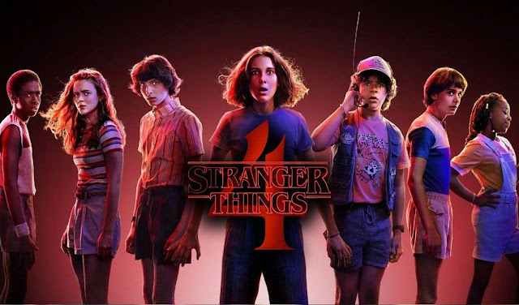

Personajes
Winona Ryder como Joyce Byers, la madre de Will y Jonathan Byers y está divorciada de Lonnie Byers, el padre de sus dos hijos. David Harbour como Jim Hopper, el jefe del departamento de policía de Hawkins. Finn Wolfhard como Mike Wheeler, es hijo de Karen y Ted, hermano menor de Nancy y hermano mayor de Holly, y uno de los tres amigos de Will Byers. Millie Bobby Brown como Once / Jane Hopper, una joven con habilidades telepáticas y psicoquinéticas que creció en los laboratorios Hawkins. Gaten Matarazzo como Dustin Henderson, amigo de Mike, Will y Lucas, es un niño muy inteligente y estudioso cuya displasia cleidocraneal lo hace ceder. Caleb McLaughlin como Lucas Sinclair, es amigo de Mike, Will y Dustin, y hermano mayor de Erica. Natalia Dyer como Nancy Wheeler, es la hija de Karen y Ted, hermana mayor de Mike y Holly Wheeler, novia de Steve durante la primera temporada. Charlie Heaton como Jonathan Byers, un joven callado hermano de Will e hijo de Joyce. Cara Buono como Karen Wheeler
